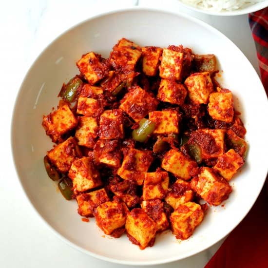

Chili Garlic Paneer

Description
Homemade paneer is marinated in a spicy chili garlic marinade which adds a wonderful flavor to this versatile Indian cheese. Pan-frying the paneer gives it delightful texture.
Info
Prep Time: 30 mins
Cook Time: 20 mins
Refrigerate Time: 30 mins
Marinate Time: 4 hrs
Other Time: 40 mins
Total Time: 6 hrs
Servings: 4
Yield: 4 portions
Ingredients
- 2 quarts whole milk
- 2 tablespoons plain yogurt
- 3 tablespoons fresh lemon juice, or more as needed
- 4 cups cold water
Chili Garlic Marinade:
- 4 cloves garlic, crushed
- 2 to 3 tablespoons Sriracha chili sauce, or other hot chili sauce
- 2 tablespoons plain yogurt
- 1 lemon, juiced
- 1 and 1/2 teaspoons garam masala, or curry spice powder
- 1 teaspoon kosher salt, or to taste
Chili Garlic Paneer:
- 2 tablespoons clarified butter or ghee
- 8 ounces paneer cheese
Yogurt Dipping Sauce:
- 1/3 cup plain yogurt
- 1/4 cup finely chopped cilantro leaves
- 2 tablespoons diced jalapeno pepper
- 1 lime, juiced
- Salt to taste
Steps
- Heat milk in a large pot on between medium and medium-high heat to 195 degrees F to 205 degrees F (90 to 9 degrees C) until milk is almost simmering. Reduce heat to low, and stir in yogurt and 3 tablespoons lemon juice. Stir for about 30 seconds, and if milk isn’t separating into curds and whey, stir in another 1 to 2 tablespoons lemon juice.
- Once curds form, turn off heat, and pour in cold water to stop the cooking process and cool mixture. Pour curds into a cheesecloth or a cotton towel lined colander and drain out whey. Whey can be reserved for other uses.
- Let curds sit and drain for 5 to 10 minutes, before gathering up the cloth, and squeezing out excess liquid. Be careful to not burn yourself, as the liquid may still be very hot. Press curds between layers of cloth into a disc of about 2 inches high, being careful not to leave excess cloth bunched up on top, or underneath the cheese. Place something flat over the cheese, and place a heavy pan on top to weigh down. Leave paneer under the weight until very firm to the touch, 30 to 90 minutes. Wrap and refrigerate until well chilled before using.
- For the chili garlic marinade combine garlic, Scriracha, yogurt. lemon juice, garam masala, and kosher salt in a bowl; mix until well combined.
- Cut paneer into squares or rectangles about 1/4 to 1/2 inch thick, and add to the marinade, tossing well to coat thoroughly on both sides. Wrap and marinate paneer for at least 4 hours.
- Combine yogurt, cilantro, jalapeno, lime juice, and salt for the yogurt dipping sauce in a blender; blend until smooth.
- Melt butter in a non-stick pan over medium-high heat and pan-fry paneer until well browned, about 2 minutes per side. Serve immediately with dipping sauce.